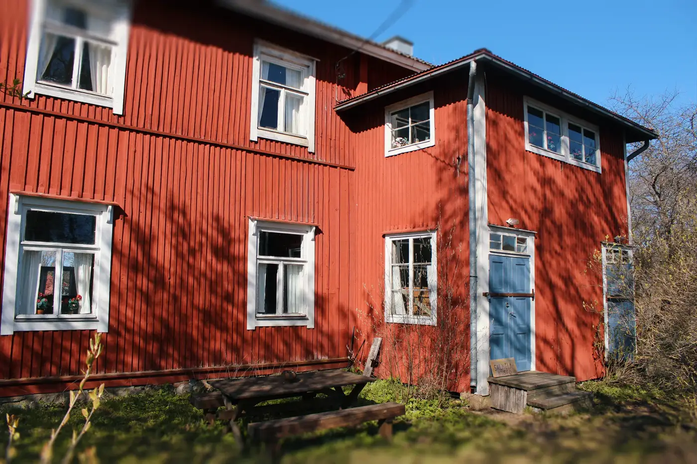
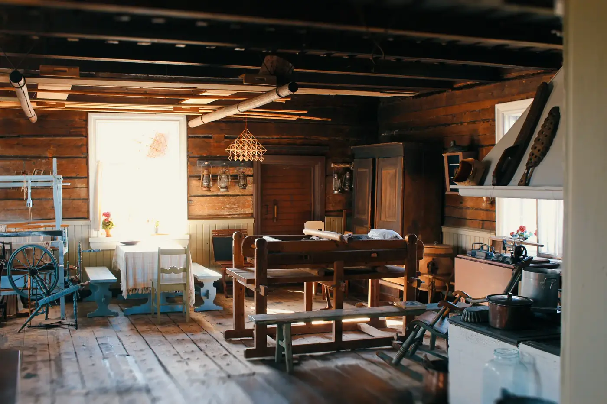
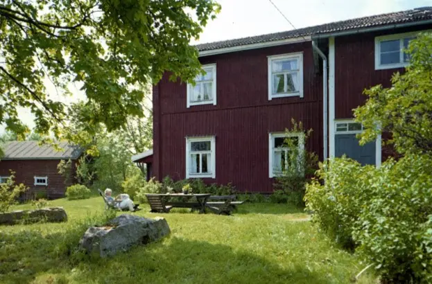
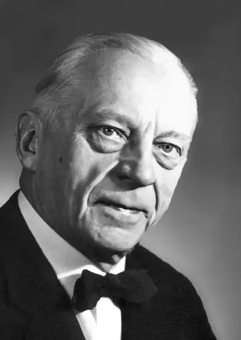

Oravala
500 vuotta vihtiläistä historiaa
- 1543
- ORAVALAN maatila on ollut Törnström-Hiidenheimon suvun hallussa vuodesta 1543.
- 1600-luku
- Oravala on Vihdin vanhimpia taloja. Keskiajasta lähtien tila on kulkenut perintönä sukupolvesta toiseen. 1600-luvulla Oravala oli useaan otteeseen nimismies- ja käräjätalona.
- Isovihan jälkeen
- Isovihan jälkeen Oravala jaettiin veljien kesken kahtia Ylöstaloon eli Salmelaan ja Alestaloon eli Niemelään. Sukulaistalot yhdistyivät jälleen vuonna 1929, kun Niemelän isäntä Artturi Hiidenheimo osti Salmelan.
- Artturi Hiidenheimo
- Artturi Hiidenheimo oli merkittävä vihtiläinen vaikuttaja, liikemies ja kansanedustaja.

Salmelan rusthollimuseo
- 1784
- Salmelan Rusthollimuseon rakennus Vihdin Oravalassa on vuodelta 1784 ja sen esineistö – noin 400 esinettä – on peräisin Oravalan kylältä ja Salmelasta.
- 1543
- Oravalan maatila on ollut Törnström-Hiidenheimon suvun hallussa vuodesta 1543.
- 1900-luku
- Tila muodostui 1900 luvulla Niemelästä ja Salmelasta kunnallisneuvos Artturi Hiidenheimon yhdistäessä maat yhteen.


Kurkista sisään
Virtuaalikierros
Tutustu Salmelan huoneisiin 360°-kuvina jo ennen vierailua.
Avaa virtuaalikierros koko näytölle (avautuu uuteen välilehteen)
Tunnettuja taiteilijoita ja kulttuurin sykettä
- Kokoelma
-
Salmelan pysyvässä näyttelyssä on mm. vihtiläisten taiteilijoiden töitä. Tunnetuimmat Oravalassa asuneet ja maalanneet taiteilijat olivat Helge Dahlman, Wilho Sjöström ja Ester Helenius.
Kokoelma käsittää yhteensä 45 teosta.
- Tapahtumat
- Salmelassa järjestetään taide- ja musiikkitapahtumia, kuten kamarimusiikkikonsertteja sekä sukututkimukseen ja maalaustaiteeseen liittyviä tapahtumia.
Rusthollimuseon perustaminen
- Perintö
-
PIRKKO RITVALA o.s. HIIDENHEIMO sai Salmelan rakennuksen perintönä sisareltaan Maija Hiidenheimolta.
Pirkon unelmana oli kunnostaa rakennus ja luoda siitä ainutlaatuinen rustholli- ja kotimuseo.
- 1980–1982
-
Pirkko Ritvala toteutti Salmelaan kattavan restaurointityön vuosina 1980–1982.
Rakennuksen korjaukseen osallistui lukuisat korjausrakentamiseen ja entisöintiin erikoistuneet osaajat, kuten vihtiläinen kirvesmies Nils Blom, entisöintiliike Hukkanen, arkkitehti Pirjo Kovanen sekä useat paikalliset yritykset ja ammattilaiset.
- 1996
- Pirkko Ritvala perusti Pirkko ja Reino Ritvala Salmela-säätiön vuonna 1996, jonka toiminnassa ovat aktiivisena olleet mm. hänen lapsensa Arja Teramo, Marjaana Pousar, Jyrki Ritvala ja Mervi Ritvala.
- Nyt
- Nyt toiminnasta vastaa Pirkko ja Reino Ritvalan lastenlapset, säätiön hallituksen puheenjohtajana Volter Pousar.
Pirkko Ritvala o.s. Hiidenheimo 1911–1996, syntyi Oravalassa, Vihdissä.
— Toimi ruotsin ja saksan kielen lehtorina Vihdin yhteiskoulussa.
— Oli aktiivinen Vihdin museotoiminnan kehittämisessä.

Reino Ritvala 1900–1979, syntyi Muolaan pitäjässä, Karjalassa.
— Maanmittausinsinööri, toimi vuosina 1928–1936 Sallassa ja Karjalassa maanmittarina. Sittemmin Uudenmaanläänin maanmittausinsinöörinä.
Näe ja koe salmelassa tärkeä osa Vihdin historiaa
Vapaa pääsy!
- Kesä 2026
-
Olemme kesällä 2026 avoinna sunnuntaisin:
, ,
Klo 12–15
- Osoite
- Oravalantie 243, 03100 Vihti
Avaa kartalla (avautuu uuteen välilehteen) - Ryhmät
-
Museokierrokset ryhmille
Tiedustele tai varaa heti
volter.pousar@muovikum.fi
Pirkko ja Reino Ritvalan Salmela-säätiön hallitus 2025
- Hallitus
-
- Volter Pousar, puheenjohtaja
- Tuulikki Teramo, sihteeri
- Pirjetta Järvelin, hallituksen jäsen
- Juha Ritvala, varapuheenjohtaja
- Avustukset
- Mahdolliset avustukset rusthollimuseon toiminnalle tilille FI68 4006 1520 0117 13